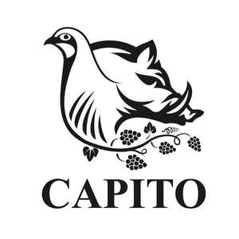

Trade Mark Journal No.2025/011 14 March 2025
UK00004144147 6 January 2025 (29,30,31,32,33,35,41,43)

- Class 29
- Meat, fish, poultry and game; meat extracts; preserved, frozen, dried and cooked fruits and vegetables; jellies, jams, compotes; eggs; milk, cheese, butter, yogurt and other milk products; fruit-based concentrate for cooking; vegetable-based concentrate for cooking; olive oil; extra virgin olive oil; oils and fats for food; edible oils; fruit snacks; milk; milk beverages; milk substitutes; egg substitutes; dairy products and dairy substitutes; processed seeds, nuts, fruits, fungi, vegetables and pulses; food bars based on seeds, nuts, fruits, fungi, vegetables and pulses; fresh meats; charcuterie; ham; pork; fresh iberico ham and pork; prepared meals consisting primarily of meat, fish, vegetables, pulses, legumes, meat substitutes, milk substitutes or egg substitutes; vegetable paste; fruit paste; tomato paste; pickled vegetables; pickled fruits; dried chillis; chilli oil; truffle-based oils; preserved chilli peppers; preserved chopped chilli peppers, not being seasonings or flavorings; truffle paste; preserved truffles; cooked truffles; dried truffles [edible funghi]; truffle-based spread products (truffle creams); bean curd products; fermented soya beans; pressed fruit paste; spiced oils; preserves; snack food based on fruits, nuts, meat, meat substitutes, potatoes, vegetables, soy, tofu, nuts, seeds, milk or milk substitutes; tofu; soup mixes; soup; soup concentrates; bouillon; meat, nuts, fruit, legume, vegetable spreads.
- Class 30
- Coffee, tea, cocoa, sugar and artificial coffee; rice, pasta and noodles; tapioca and sago; flour and preparations made from cereals, bread, pastries and confectionery, ices; chocolate; ice cream, sorbets and other edible ices; sugar, honey, treacle; yeast, baking-powder; salt, seasonings, spices, preserved herbs; vinegar, sauces, seasoning, flavouring and other condiments; ice (frozen water); coffee substitutes; tea substitutes; sugar substitutes; chocolate confectionary; tablet confectionary; cereals; cereal based snacks; spices; edible spices; mixed spices; spices in the form of powders; chili sauce; chili seasoning; chilli flakes; pasta sauces; dipping sauces; ready-to-serve sauces; ready-to-eat sauces; truffle honey; truffle salt; dried herbs; processed herbs; sweets (non-medicated); ice creams; sorbets; frozen yoghurt; cakes; cake mixes; biscuits; biscuit mixes; food flavouring; cereal bars; cookies; high-protein cereal bars; flavourings, other than essential oils, for beverages, cakes, soups, foods.
- Class 31
- Raw and unprocessed agricultural, aquacultural, horticultural and forestry products; raw and unprocessed grains and seeds; fresh fruits and vegetables, fresh herbs; natural plants and flowers; bulbs, seedlings and seeds for planting; live animals; foodstuffs and beverages for animals; truffles, fresh; malt.
- Class 32
- Non-alcoholic beverages; mineral and aerated waters; fruit beverages and fruit juices; syrups and other non-alcoholic preparations for making beverages; juices; juice drinks; vegetable juice; energy drinks; energy drinks containing caffeine; waters; flavoured waters; tonic water; beers; alcohol-free beer.
- Class 33
- Alcoholic beverages (except beers); wine; cider; pre-mixed alcoholic beverages, other than beer-based; alcoholic essences; alcoholic extracts; anise [liqueur]; anisette [liqueur]; aperitifs; arak [arrack]; bitters; brandy; cocktails; curacao; digesters [liqueurs and spirits]; distilled beverages; fruit (alcoholic beverages containing -); fruit extracts, alcoholic; gin; kirsch; liqueurs; mead [hydromel]; peppermint liqueurs; perry; piquette; rice alcohol; rum; sake; spirits [beverages]; gin; vodka; whisky; wine, spirits, liquors.
- Class 35
- Advertising; business management; business administration; business promotion; office functions; loyalty schemes; commercial information services relating to alcoholic beverages; wholesale and retail services (real and virtual) for the sale of real and virtual non-medicated cosmetics and toiletry preparations, non-medicated skin care preparations, natural cosmetics, beauty products, perfumery, organic cosmetics, clothing, footwear, headgear, textiles, toys, games, playthings and novelties, musical instruments, vehicles, cars, bikes, sporting goods, books, paper, cardboard, posters, stationery, works of art, instructional and teaching material (except apparatus), articles for packaging, wrapping and storage of paper, cardboard or plastics, disposable paper products, haberdashery, leather and imitations of leather, animal skins and hides, luggage and carrying bags, umbrellas and parasols, handbags, luggage tags, rucksacks, sports bags, shopping bags, canvas bags, fashion bags, wash bags, make up bags, beach bags, watches, jewellery, travel accessories, sunglasses, glasses, eyewear cases, technological goods, accessories for technological goods, speakers, phone cases, household or kitchen utensils and containers, cookware and tableware, kitchenware, cups, plates, mugs, bowls, coffee machines, furniture, furnishings, soft furnishings, lighting, home accessories, food and beverage, alcoholic and non-alcoholic beverages and tobacco products, foodstuffs, christmas decorations; information, advisory and consultancy services relating to all the aforesaid.
- Class 41
- Education; providing of training; entertainment; sporting and cultural activities; providing on-line electronic publications, not downloadable; publication of books; publication of electronic books and journals on-line; publication of texts, other than publicity texts; business mentoring services; provision of training and education in relation to cookery, alcoholic beverages, and country estate services; wine tasting services; education services relating to the provision of restaurant, vineyard and country estate services; training relating to the wine industry; training relating to the food and beverage industry; arranging of educational events; arranging of lectures; organisation of recreational events; organising of cultural events; live musical performances; art exhibitions; arranging and conducting of colloquiums, conferences, congresses, seminars, exhibitions, and symposiums; entertainment services provided by country retreats; cinema services; health club services; social club services; fitness club services; sports and fitness services; health and fitness training; party planning services; providing fitness and exercise facilities; golf courses; provision of gymnasium facilities; gymnasium services; gymnasium club services; organisation of sporting events and activities; provision of sporting, facilities, activities and amenities; hunting and fishing instruction; arranging parties for fishing and hunting; organising and conducting fishing competitions; arranging parties for deer stalking; hunting guide services; provision of fishing facilities; horse riding schools and horse riding instruction; recreational services relating to horse riding; provision of horse riding facilities; horse showing and jumping events; arranging parties for game shooting; providing facilities for clay pigeon shooting; education and training services delivered by virtual means; entertainment services delivered by virtual means; health and fitness training services delivered by virtual means; organising of cultural and recreational events delivered by virtual means; organisation of parties; organisation of entertainment events; information, consultancy and advisory services in relation to all of the aforesaid.
- Class 43
- Services for providing food and drink; temporary accommodation; hotel services; hospitality services (accommodation); hospitality services (food and drink); arranging and booking hotels and accommodation services; accommodation services; provision of hotel accommodation; reservation services for booking accommodation and meals; providing accommodation for functions; catering services; providing accommodation for meetings; restaurant services provided by hotels; restaurant services; bar services; restaurant services incorporating licenced bar facilities; arranging and booking hotels and accommodation services delivered by virtual means; wine tasting services (provision of drinks); services for providing food and drink in a nightclub; cocktail lounges; wine bar services; arranging of wedding receptions; rental of holiday lodgings; banqueting services; reservation services for booking accommodation and meals delivered by virtual means; day nurseries and crèche facilities; information, consultancy and advisory services in relation to all of the aforesaid.
Spectre Holdings Limited
Representative: Mishcon de Reya LLP